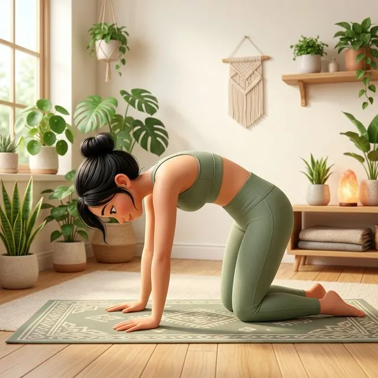
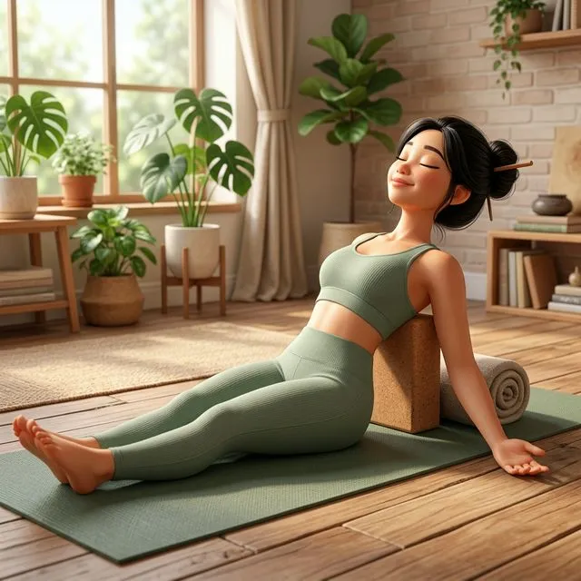

Cổ vai gáy là vùng chịu ảnh hưởng nặng nề nhất từ lối sống hiện đại — ngồi máy tính, cúi điện thoại, căng thẳng kéo dài. Theo nghiên cứu, hơn 70% người trưởng thành từng trải qua đau cổ vai gáy ít nhất một lần trong đời. Yoga là phương pháp tự nhiên, an toàn và hiệu quả nhất để giải quyết vấn đề này từ gốc rễ.
Tìm hiểu về vùng cổ vai gáy 🔍
Vùng cổ vai gáy bao gồm hệ thống phức tạp các cơ, xương và dây thần kinh:
- Cột sống cổ (C1–C7): 7 đốt sống cổ nâng đỡ đầu nặng khoảng 5kg. Khi cúi đầu 45°, áp lực tăng lên 22kg
- Cơ thang (Trapezius): Cơ lớn hình thang kéo dài từ chẩm đến giữa lưng — dễ bị co cứng, tạo "nút thắt"
- Cơ nâng vai (Levator Scapulae): Nối đốt sống cổ với xương bả vai — thủ phạm chính gây đau lan từ cổ xuống vai
- Cơ bậc thang (Scalenes): 3 cơ nhỏ hai bên cổ — khi co rút gây tê tay, đau đầu
- Cơ ức đòn chũm (SCM): Cơ lớn hai bên cổ — co rút gây xoay cổ khó, đau đầu một bên
Nguyên nhân đau cổ vai gáy 📱
- Cúi nhìn điện thoại: Cúi đầu nhìn điện thoại làm cổ chịu áp lực gấp 4–5 lần bình thường
- Đầu nhô về trước: Khi ngồi máy tính, đầu nhô về trước — mỗi 2.5cm nhô = thêm 4.5kg áp lực lên cổ
- Vai cuộn về trước: Cơ ngực co ngắn kéo vai về phía trước, cơ lưng trên yếu đi
- Căng thẳng kéo dài: Cơ thể vô thức "nhún vai" khi căng thẳng → cơ thang luôn co cứng
- Ngủ sai tư thế: Gối quá cao hoặc quá thấp, ngủ sấp → cổ bị vặn suốt đêm
Đứng tựa lưng vào tường. Nếu phần sau đầu không chạm tường một cách tự nhiên → bạn đang có tư thế đầu nhô về trước. Đây là nguyên nhân số 1 gây đau cổ vai gáy mạn tính.
6 bài tập yoga cho cổ vai gáy 🧘
Chuỗi bài tập được sắp xếp từ nhẹ → sâu, thích hợp tập theo thứ tự. Tổng thời gian: 15–20 phút.
1. Nghiêng cổ có hỗ trợ (30 giây × 2 bên)
Tác dụng: Kéo giãn cơ thang trên và cơ nâng vai — hai cơ hay bị co cứng nhất.
- Ngồi thẳng lưng, hạ nhẹ vai xuống
- Nghiêng đầu sang phải, tai phải hướng về vai phải
- Tay phải đặt nhẹ lên thái dương trái — không kéo, chỉ dùng trọng lượng tay
- Tay trái tự nhiên buông xuống hoặc nắm mép ghế
- Hít thở sâu 5 nhịp, cảm nhận kéo giãn từ cổ đến vai trái
2. Tư thế Mèo – Bò (Marjaryasana-Bitilakasana) — 8–10 vòng

Tác dụng: Khởi động toàn bộ cột sống, giải phóng căng cứng lưng trên và cổ.
- Quỳ bốn điểm: tay dưới vai, đầu gối dưới hông
- Hít vào (Bò): Hạ bụng, ngẩng đầu lên, mở ngực — kéo giãn mặt trước cổ
- Thở ra (Mèo): Cong lưng lên, cằm ép ngực, nhìn rốn — kéo giãn mặt sau cổ
- Chuyển động chậm, đồng bộ với hơi thở
- Mẹo: Tập trung xoay cuộn từ xương cùng lên đến đỉnh đầu, cảm nhận từng đốt sống chuyển động
3. Xoay cổ bán nguyệt (Ardha Griva Chakra) — 5 vòng × 2 hướng
Tác dụng: Bôi trơn khớp cổ, tăng phạm vi chuyển động, giảm cứng khớp buổi sáng.
- Ngồi thẳng, hạ cằm chạm ngực
- Cuộn cằm từ ngực sang vai phải → ngẩng nhẹ → sang vai trái → về ngực (hình bán nguyệt)
- Không ngả đầu ra sau — chỉ xoay nửa vòng phía trước để bảo vệ đốt sống cổ
- Tốc độ: khoảng 5 giây cho mỗi nửa vòng
- Nếu nghe tiếng "rắc" nhẹ → bình thường. Nếu đau → dừng lại
4. Tay mặt bò (Gomukhasana) — 5 hơi thở × 2 bên
Tác dụng: Mở rộng vai, kéo giãn cơ xoay vai và cơ tam đầu — rất hiệu quả cho vai cứng, vai cuộn về trước.
- Ngồi thẳng lưng, tay phải đưa lên cao rồi gập khuỷu tay ra sau đầu, bàn tay hướng xuống giữa hai bả vai
- Tay trái vòng ra sau lưng từ dưới, bàn tay hướng lên trên
- Cố gắng nắm hai tay vào nhau phía sau lưng (dùng dây đai yoga nếu chưa chạm được)
- Giữ ngực mở, lưng thẳng, không nghiêng người
- Mẹo: Bên nào khó hơn = bên vai cứng hơn, cần tập nhiều hơn bên đó
5. Luồn kim (Parsva Balasana) — 5 hơi thở × 2 bên
Tác dụng: Xoay cột sống ngực, kéo giãn sâu cơ vai và lưng trên — bài tập "giải cứu" cho dân văn phòng.
- Từ tư thế quỳ bốn điểm
- Hít vào, nâng tay phải lên trần
- Thở ra, luồn tay phải dưới tay trái, hạ vai và tai phải xuống sàn
- Tay trái có thể: giữ yên / vươn thẳng / quấn ra sau lưng (tăng dần mức xoay)
- Hít sâu vào lưng trên, cảm nhận xương sườn mở rộng
6. Tư thế cá có hỗ trợ (Matsyasana) — 3–5 phút

Tác dụng: Mở ngực thụ động, kéo giãn toàn bộ mặt trước cơ thể — "thuốc giải" cho tư thế gù.
- Đặt 1 gạch yoga (hoặc gối cuộn) ngang dưới xương bả vai
- Đặt 1 gạch thấp hơn (hoặc chăn cuộn) dưới đầu
- Nằm ngửa, hai tay mở rộng sang hai bên, lòng bàn tay ngửa lên
- Chân duỗi thẳng hoặc co gối (chọn tư thế thoải mái)
- Nhắm mắt, thở đều — không cần nỗ lực gì, trọng lực sẽ làm việc cho bạn
- Lưu ý: Nếu đau lưng dưới → co hai đầu gối, bàn chân đặt sàn
Buổi sáng: Bài 1 + 2 + 3 (5 phút khởi động cổ vai)
Giữa ngày: Bài 1 + 4 (3 phút tại bàn làm việc)
Buổi tối: Trọn bộ 6 bài (15–20 phút, kết thúc bằng tư thế cá thư giãn)
Nguyên tắc an toàn ⚠️
- Không bao giờ ngả đầu ra sau quá mức — cột sống cổ rất nhạy cảm
- Đau nhức nhẹ khác với đau nhói: Cảm giác kéo giãn là bình thường; đau nhói, tê, buốt = dừng ngay
- Không xoay cổ tròn 360°: Chỉ xoay bán nguyệt (nửa vòng phía trước)
- Nếu có thoát vị đĩa đệm cổ → tham khảo bác sĩ trước khi tập
- Hơi thở là chìa khóa — thở ra khi đi vào tư thế sâu hơn
3 thói quen phòng ngừa đau cổ vai gáy 🛡️
- Quy tắc 20-20-20: Mỗi 20 phút nhìn màn hình → nhìn xa 6 mét → trong 20 giây. Kết hợp cuộn vai 5 vòng
- Chuẩn bị góc làm việc đúng: Mắt ngang đỉnh màn hình, khuỷu tay vuông góc, bàn chân chạm sàn
- Gối ngủ phù hợp: Nằm ngửa → gối thấp; nằm nghiêng → gối dày bằng khoảng cách vai đến tai